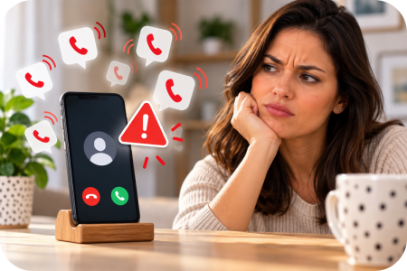
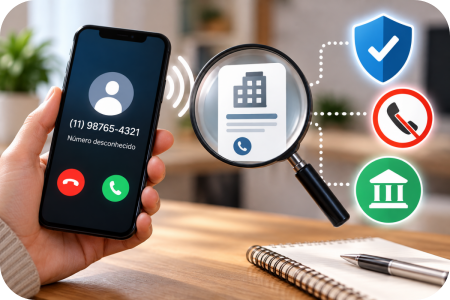

O celular toca. Você atende e ninguém fala. A ligação cai. Pouco depois, outro número liga. E mais outro.
Em alguns dias, parece que o telefone não para. Mas por que isso acontece?
Nem toda ligação desconhecida é golpe. Algumas são chamadas legítimas de empresas, cobranças, pesquisas ou ofertas de serviços. Outras podem ser chamadas automatizadas em grande escala. E também existem ligações utilizadas em tentativas de fraude.
O importante é saber como agir sem precisar viver com medo de atender o telefone.
1. Por que algumas ligações desligam quando você atende?
Existem diferentes motivos.
Centrais automatizadas podem realizar muitas chamadas simultaneamente. Quando uma pessoa atende e um operador fica disponível, a ligação pode ser direcionada para ele. Outras chamadas realizadas ao mesmo tempo podem ser encerradas.
Alguns sistemas automatizados também podem realizar chamadas em grande escala para verificar se determinados números estão ativos.
Por isso, uma ligação que cai logo após você atender não significa automaticamente que alguém esteja tentando aplicar um golpe. Mas merece atenção quando passa a acontecer repetidamente.
2. Número desconhecido não significa necessariamente golpe
É importante não transformar qualquer número desconhecido em criminoso.
Uma ligação legítima pode vir de uma empresa com a qual você mantém relacionamento, uma instituição financeira, um serviço de cobrança, uma empresa de entrega, um consultório, uma pesquisa ou algum outro serviço que realmente precise falar com você.
O problema é que golpistas também utilizam chamadas telefônicas.
Por isso, o mais importante não é apenas perguntar: “Conheço este número?”
A pergunta melhor é: “O que essa pessoa está querendo que eu faça?”
3. Pediram senha, código ou transferência? Pare
Se uma ligação inesperada pedir senha, código recebido por SMS, código de autenticação, dados bancários, número completo do cartão, transferência de dinheiro ou um Pix urgente, não forneça as informações durante a chamada.
Mesmo que a pessoa diga representar seu banco, uma empresa conhecida ou um órgão público, encerre a ligação e confirme a situação pelos canais oficiais.
Dica da Lu: quem ligou para você não deve escolher o caminho que você usará para confirmar a história. Desligue e procure você mesmo o canal oficial.

4. O número que aparece na tela pode enganar?
Pode haver adulteração do número apresentado ao destinatário da chamada. Essa prática é conhecida como spoofing.
Por isso, apenas reconhecer um número na tela não deve ser usado como prova absoluta de que aquela ligação realmente partiu da pessoa ou instituição indicada.
A Anatel vem adotando medidas para aumentar a autenticação e a rastreabilidade das chamadas e combater esse tipo de fraude.
Na prática, para o consumidor permanece uma regra muito simples: recebeu uma solicitação estranha ou inesperada? Confirme por outro caminho.
O método Mundo LuFiNas
Para uma ligação inesperada, lembre-se:
Você não precisa discutir com quem está ligando. Também não precisa provar que percebeu uma possível tentativa de golpe.
Se a conversa ficar estranha: encerre a ligação.
Depois, procure diretamente a instituição mencionada utilizando o aplicativo, site, telefone ou outro canal oficial que você conhece.
5. Posso descobrir qual empresa está me ligando?
Existe uma ferramenta chamada Qual Empresa Me Ligou.
Ela permite consultar determinados números telefônicos vinculados a pessoas jurídicas e verificar a empresa associada àquele número. Isso pode ajudar quando aparecem repetidamente ligações de um número que você não reconhece.
Mas existe uma diferença importante: identificar a empresa responsável por determinado número não substitui os cuidados de segurança durante uma ligação.
Se houver pedido de senha, código, pagamento ou alguma solicitação incomum, continue utilizando os canais oficiais para confirmar a informação.
6. E quando são ligações de publicidade o tempo inteiro?
O consumidor também dispõe da plataforma Não Me Perturbe para manifestar que não deseja receber determinadas chamadas publicitárias ou de oferta de serviços abrangidas pela plataforma.
É importante saber que o cadastro não impede necessariamente todo tipo de ligação. Alguns contatos podem continuar ocorrendo, como determinadas cobranças, comunicações relacionadas a solicitações do próprio consumidor e ações de prevenção a fraudes.
Também é possível utilizar recursos disponíveis no próprio celular para bloquear números específicos.
7. E o famoso 0303?
O prefixo 0303 foi criado para ajudar o consumidor a identificar determinadas chamadas em grande volume.
As regras passaram por mudanças nos últimos anos e hoje existem também mecanismos de autenticação e identificação das chamadas.
Por isso, não use apenas a presença ou a ausência do 0303 para decidir se uma ligação é legítima ou fraudulenta.

8. Existe uma identificação mais segura das chamadas?
A Anatel vem implementando mecanismos de autenticação e identificação de chamadas.
Uma das tecnologias é chamada Origem Verificada. Quando utilizada, ela pode apresentar na tela informações autenticadas sobre o chamador, como nome da empresa, identificação visual, motivo da chamada e indicação de autenticidade.
A tecnologia ajuda a tornar as chamadas mais transparentes e dificulta a adulteração da identificação do número.
Mas sua disponibilidade não significa que todas as ligações legítimas já aparecerão identificadas dessa maneira. Portanto, os cuidados básicos continuam importantes.
Quando devo desconfiar mais?
Atenção especial quando a ligação cria uma emergência inesperada, diz que sua conta será bloqueada imediatamente, afirma que houve uma compra e exige uma ação urgente, pede senha ou código de autenticação, solicita transferência ou Pix, manda instalar aplicativo, pede para acessar um link ou tenta impedir que você desligue para conferir a informação.
Nessas situações, não resolva o problema dentro daquela ligação.
Desligue e procure o canal oficial.
Checklist da Lu
☑ Não entre em pânico
☑ Não informe senhas ou códigos
☑ Não faça Pix ou transferência por pressão
☑ Desligue se desconfiar
☑ Confirme pelo canal oficial
Dica da Lu: você não precisa descobrir durante a ligação se a pessoa é golpista. Se ficou desconfiado, desligue. Depois você confere.
Para terminar...
Chamadas desconhecidas podem ser apenas incômodas. Podem ser legítimas. Podem ser automatizadas. E algumas podem fazer parte de tentativas de fraude.
Por isso, não precisamos tratar toda ligação como golpe — mas também não precisamos entregar informações pessoais apenas porque alguém parece saber nosso nome, banco ou outros dados.
O hábito mais seguro continua sendo:
Ouviu → desconfiou → desligou → confirmou.
Informação ajuda a transformar aquele telefone tocando sem parar em algo muito menos assustador.
Fontes consultadas
Agência Nacional de Telecomunicações — Chamadas Abusivas — informações sobre chamadas automatizadas e medidas de combate a chamadas abusivas.
Ministério das Comunicações — Saiba como bloquear ligações indesejadas e se proteger de golpes telefônicos — orientações sobre Não Me Perturbe, Qual Empresa Me Ligou e segurança durante chamadas.
Anatel — Autenticação e Identificação de Chamadas — autenticação, identificação do chamador e Origem Verificada.
Anatel — Combate ao Spoofing — medidas contra a adulteração da identificação da origem das chamadas.
Anatel — Regras relacionadas ao 0303 — identificação de chamadas em grande volume e mudanças regulatórias.